西側從 158 巷 8 弄經鋪磚通道到 20 弄，再向西走到延吉街 9 巷。東側從 106 巷各弄出口向南轉入 10 弄，折角向西可接 72 巷，向北可接 8 弄。三張圖依序為 Google 全景、更新前與更新後遊戲畫面。兩張實機鎖定同一座標、方位與視野。全景相機的離地高度以 2.45 公尺估算。街景日期因位置而異。
方位 82° 開啟原位置的 Google 街景 原尺寸對照
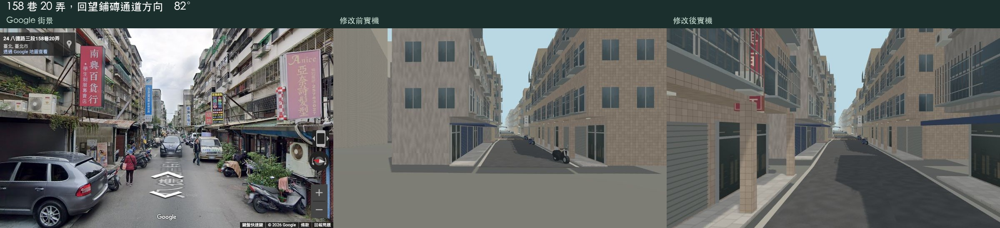
方位 80° 開啟原位置的 Google 街景 原尺寸對照
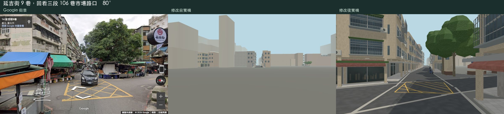
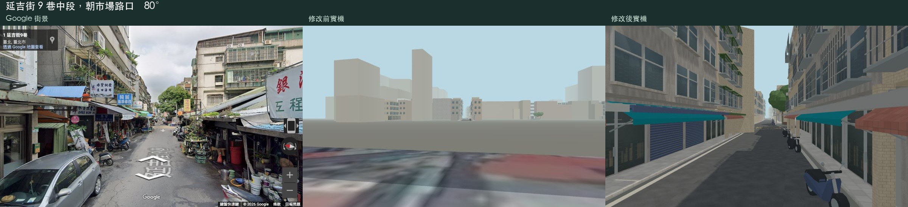
方位 145° 開啟原位置的 Google 街景 原尺寸對照
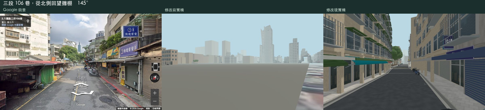
方位 330° 開啟原位置的 Google 街景 原尺寸對照
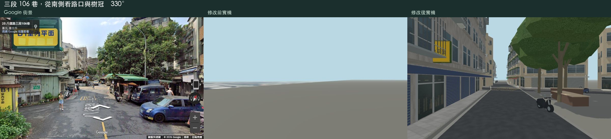
方位 175° 開啟原位置的 Google 街景 原尺寸對照
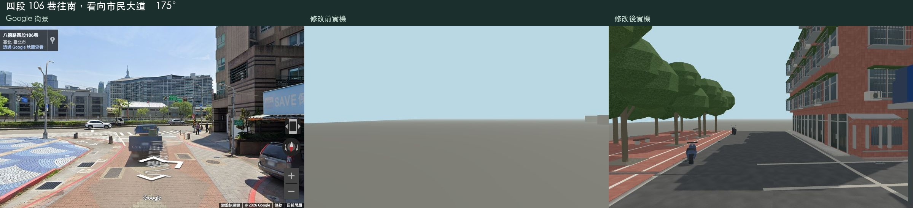
方位 256° 開啟原位置的 Google 街景 原尺寸對照
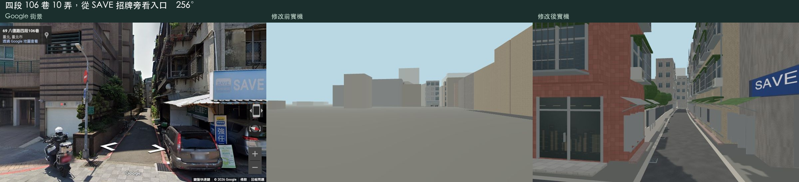
方位 264° 開啟原位置的 Google 街景 原尺寸對照
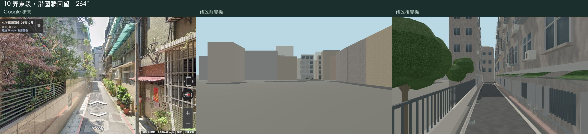
方位 255° 開啟原位置的 Google 街景 原尺寸對照
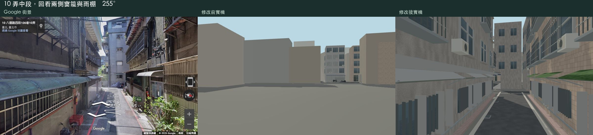
方位 81° 開啟原位置的 Google 街景 原尺寸對照
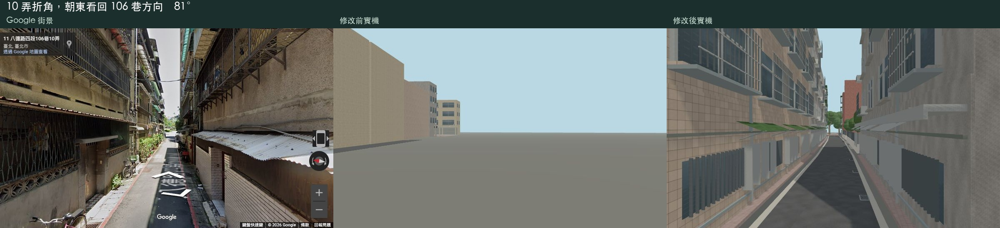
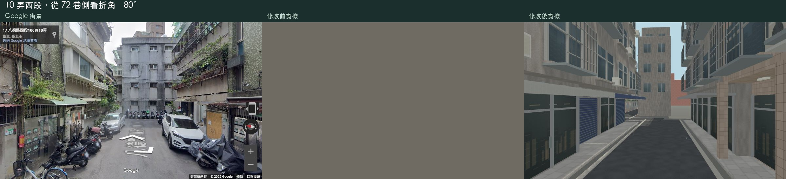